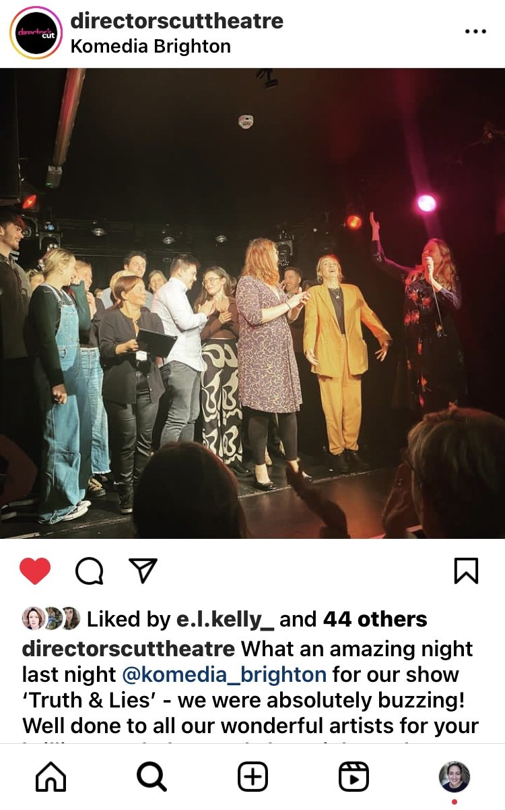
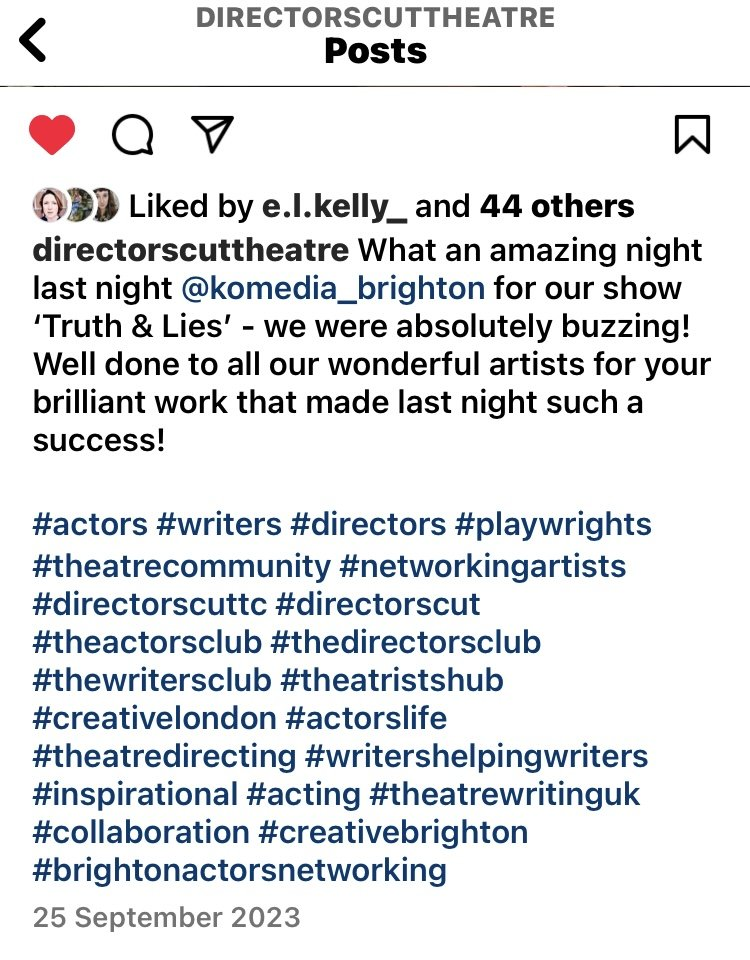
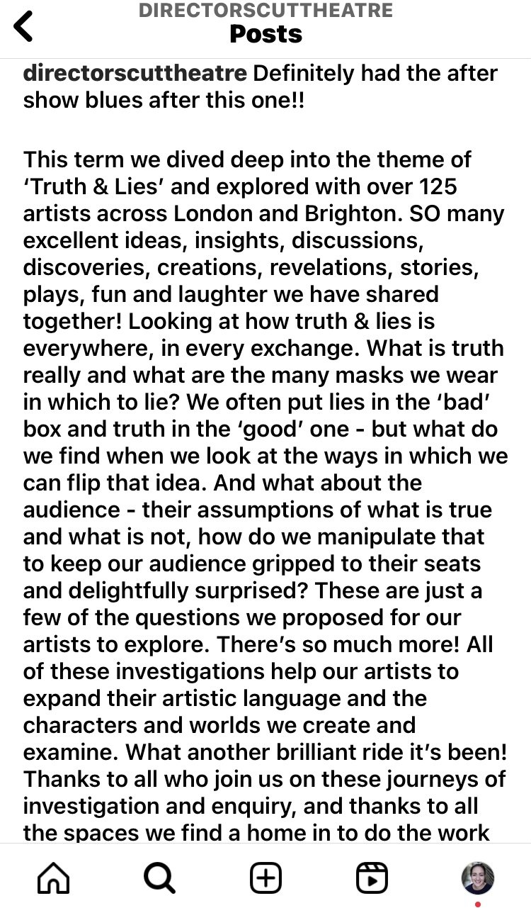

'Truth & Lies' with Directors Cut Theatre
Another great show with Directors Cut Theatre, showcasing new original work by professional Actors, Writers & Directors. The inspiration point for this show was 'Truth & Lies.'
I played Sarah from the world of Jo Sutherland's 'Lucy's Pharmakon.' This was part of a series of collaborative theatrical productions featuring emerging original works from theatre professionals.


